虚幻引擎（Unreal Engine）是由美国 Epic 公司开发的一款游戏引擎。除了制作游戏以外，还能够制作逼真的立体模型、动画CG、电影效果等
使用游戏引擎开发游戏，主要有两个方面的开发：
编程开发：游戏主逻辑、物体行为等
美术开发：场景地图、过场动画、模型和材质、特效等
不过美术开发更多地还是在其他专业软件如 Blender、C4D 中进行
虚幻引擎默认项目缓存在C盘，就算在创建时把项目路径设置在其他位置，若不修改默认缓存，则仍会占用大量C盘空间。可在epic launch的设置--编辑保管库--缓存位置修改
基本术语主要来自于Epic的Unreal Engine官方文档，以术语的英文首字母进行排序
Actor：一个物体，或者对象。所有可以放入关卡的对象都是一个Actor，比如摄像机、静态网格体、玩家起始位置的标记等。Actor支持三维变换，例如平移、缩放和旋转等，可以通过游戏逻辑代码（C++或蓝图）创建或销毁Actor
AI：人工智能的简称，是由一组程序指令而非人工输入控制的行为。这里的AI是广义上的AI，不仅仅是“深度”的AI，所有 NPC 都是由AI控制的
AIController：AI控制器，是控制游戏内AI物体（如NPC）的装置。
动画（Animation）
动画序列（Animation Sequence）
资产（Asset）是用于构建游戏的元素，比如各种材质、静态网格体、纹理、粒子系统等。各资产都保存在单独的.uasset文件中
蓝图（BluePrint）：全称：蓝图可视化脚本（BluePrint Viusal Scripting），是一种功能齐全且强大的脚本系统，允许你在虚幻编辑器（Unreal Editor）中通过基于节点的界面来创建游戏元素。可以用它在引擎中定义面向对象的类或object。使用虚幻引擎时，蓝图定义的类一般也统称蓝图
蓝图编辑器（Blueprint Editor）是一个基于节点的图标编辑器，它还有几个其他窗口，可以提供针对性的信息，并允许对蓝图及其图标进行其他修改
蓝图接口（Blueprint Interface）是一种资产类型，可以在其中创建未经定义的函数，任何蓝图都可以实现这个接口，然后为这些函数实现自己的定义。它是蓝图之间相互通信的一种方式，特别是当一个蓝图与许多其他蓝图交互时
蓝图宏库（Blueprint Macro Library）是一个蓝图容器，它包含一组宏或一组完整的图标，可以作为节点防止在其他蓝图中。
笔刷（Brush）是一种Actor，用于描述一个3D几何体，例如方形或圆形，可以简单理解为画下的形状就是之前定义的形状的特殊画笔，可以快速、粗略地创建关卡
Cascade：是虚幻编辑器中的粒子系统编辑器，可以通过在内容浏览器（Content Browser）中创建或打开一个粒子系统来访问Cascade。在这里面，可以添加、修改和删除例子发射器（Particle Emitter），向粒子发射器添加模块，以及修改模块属性
类型转换（Casting）本质上是获取某个特定的Actor（或类），然后将它视作另一种类进行处理，类型转换可以成功也可以失败，如果成功则就能访问目标Actor的特有函数和功能
例如，你希望在游戏中创建多种体积，让它们以不同方式影响玩家。其中一个体积是 火焰，它会不断伤害玩家生命值。当玩家遇到关卡中的体积时，你可以将该体积 转换 成 火焰，以此访问它的"伤害玩家"函数。
如果转换成功，表示玩家站在火中，那么玩家生命值就会开始减少。
如果转换失败，表示玩家站在其他体积中，那么生命值不会减少。
角色（Charactor）是Pawn Actor的子类，旨在用作玩家角色。角色子类包括：碰撞设置、双足运动的输入绑定、用于控制运动的附加代码
过场动画序列（cinematic sequence）也称过场动画，是游戏中播放的动画，一些过场动画会暂停游戏进程，并会设计摄像机视口中的一个或多个改变，这些叫做剧情动画（cutscene）。过场动画序列可以由Matinee创建和控制，也可以导入自外部应用程序中创建的预渲染视频，即过场动画分为：实时渲染和预渲染视频
类（Class）用于定义虚幻引擎中Actor或对象的行为和属性，类可以被继承，这意味着某个类可以从其父类（衍生或派生出该类的类）获取信息，然后再将信息传递给子类。类可以用C++代码或蓝图创建
蓝图类（Blueprint Class）是一种资产，内容创建者可以使用它在现有的游戏类上轻松添加功能。它通常简称为blueprint。蓝图在虚幻编辑器中以可视化方式而非代码方式创建，并作为资产保存在内容包中，它们本质上是在定义一种新的类或Actor，蓝图的实例可以放置在地图中，其行为与其他类型的Actor类似
碰撞（Collision）是在物理模拟过程中防止对象重叠的一种编程方式，给人一种实心物体的错觉，它也可以值碰撞网格体，即集合体的简化版本，通常以不可见的壳体或外壳的形式存在于网格体周围，这种简化有助于提高性能，允许具有大量多边形计数的复杂对象使用更为简单的几何体来计算他们之间的碰撞，从而加快运行速度
对象需要一个碰撞面才能模拟物理计算
计算机图形学中，所显示的多边形，或复杂几何体是由无数顶点和三角形绘制的，一般的三维物体都是空心的，只有一个由三角形和顶点组成的外壳
组件（Component）是可以添加到Actor上的一项功能，当为Actor添加组件后，该Actor就获得了该组件提供的所有功能，例如：旋转移动组件：能够使你的Actor四处旋转，可以理解为一个新功能
组件模式（Components Mode），可以将组件添加到蓝图中，管理现有组件的详细信息，并安排组件，组件模式中的组件列表具有层级性。组件模式是三种模式之一，其他两种为：默认模式（Default Mode）和图表模式（Graph Mode）
构造脚本（Construction Script），看见“构造”两字就应该想到些什么。构造脚本在创建蓝图类的实例对象时，执行初始化操作
内容浏览器（Content Browser）是虚幻编辑器的主要区域，用于子啊虚幻编辑器中创建、导入、组织、查看及修改内容资产。它还提供了管理内容文件夹和对资产执行其他操作的能力（例如重命名、移动、复制等）。另外，它还可以搜索游戏中所有资产并与其进行交互
在内容浏览器中，可以按类型对资产进行搜索和分类，也可以通过筛选器（Filters）下拉列表中选择特定类型的资产，或者搜索资产（Search Assets）框键入文本，以筛选资产视图
控制器（Controller）是一种可以控制Pawn（或Pawn的派生类，如Charactor）从而控制器动作的非实体Actor。人类玩家通过使用PlayerController控制Pawn，而AIController则对它们控制的Pawn施加人工智能效果。控制器使用Possess函数控制Pawn，用Unpossess放弃控制Pawn
数据引脚（Data Pins）用于将数据导入节点或从节点输出数据，数据引脚只能与同类型的相连接，可以连接到同一类型的变量（这些变量有自带数据引脚），也可以连接到其他节点上同类型数据引脚。与执行引脚一样，数据引脚在未连接到任何对象时会显示为空心，连接对象后则是实心
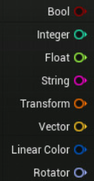
节点可以有任意数量的输入或输出数据引脚，函数调用（Function Call）节点的数据引脚对应于相应函数的参数和返回值
默认模式（Default Mode）会显示_blueprint_的所有属性，包含其中包含的变量、本地代码中定义的组件以及复制、导航和碰撞属性。在创建蓝图类新实例时，将使用默认模式下为这些属性设置的值
细节面板（Details panel）主要指的是关卡编辑器（Level Editor）中的一个面板，其中包含各个元素的属性信息。当然，虚幻引擎中的许多工具和编辑器都包含细节面板：关卡编辑器、Matinee、Persina等
导演组（Director Group）是一种控制摄像机视点的特定类型Matinee组，可以使用导演组来切换镜头之间的摄像机视点，每个Matinee序列只能有一个导演组
事件（Event）
事件图表（EventGraph）包含一个节点图表，节点图标使用事件和函数调用来执行操作，从而响应与该蓝图有关的游戏事件。它添加的功能会对该蓝图的所有实例产生影响。你可以在这里设置交互功能和动态响应。
执行引脚（Execution pins）用于将节点连接在一起，以创建执行流程。当输入执行引脚被激活时，节点将被执行，一旦节点的执行完成，他将激活一个输出执行引脚来继续执行流程。执行引脚在未连接的状态显示为空心的状态，连接到另一个之心引脚时则显示为实心。函数调用节点始终只有一个输入执行引脚和一个输出执行引脚，因为函数只有一个进入点和一个退出点。其他类型的节点可以有多个输入执行引脚和输出执行引脚，从而允许不同的行为，具体取决于哪个引脚被激活
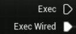
FBX文件：是Autodesk开发的一种文件格式，该文件格式用于静态网格体（Static Meshes）、骨架网格体（Skeletal Meshes）和动画序列（Animation Sequence）导入虚幻编辑器
流程控制（Flow Control）操作允许在蓝图中显式控制执行流程，这种控制可以表现为如下形式：根据某个条件是否为阵来选择要执行的图表分支、多次执行某个特定分支、按特定顺序执行多个分支等。默认的流程控制操作包括分支（if语句）、循环（for 和while）、门和序列。
框架（Framework）系统构成了虚幻引擎游戏逻辑（gameplay）的基础。游戏逻辑框架可以划分为三大类：游戏类型、玩家和界面。每个类别负责游戏逻辑的某个特定方面，每个类别又由一个多多个系统和类组成，这些系统和类定义了不同的部分以及他们的协作方式
游戏模式（GameMode）类负责设置当前的游戏规则，包括：
玩家如何加入游戏
是否可以暂停游戏
任何与游戏相关的行为，如获胜条件
可以在“项目设置”中设置默认的游戏模式，也可以关卡中覆盖这些设置。无论如何实现游戏模式，每个关卡只能有一个游戏模式
在多人游戏中，游戏模式只存在服务器上，规则会被复制（发送）到所有联网的客户端
相关的C++类是GameMode
游戏状态（GameState）是一种容器，保存着你希望在游戏中复制给每个客户端的信息，简而言之，它表示每个联网玩家的“游戏状态”。
游戏状态包含的部分信息包含：
游戏分数、比赛是否已经开始】根据场景中玩家的人数，需要生成多少AI
如果是多人游戏，则每个玩家的电脑上都只有一个游戏状态实例，而服务器的实例为权威实例（即客户端的信息更新来源）
相关的C++类是GameState
图表（Graph）以可视化形式展现了特定节点，它显示了图表中包含的所有结点和它们的连接关系。它提供了添加和删除结点、排列结点以及在节点之间创建连线的编辑功能。你还可以子啊图表中设置断点来帮助调试蓝图
蓝图编辑器模式已经移除
组（Group）：在Matinee中，组是一个用于特定Actor的动画和视觉效果的容器。在关卡编辑器中，组是一个组织对象，选定的Actor可以被组合在一起，一遍将他们转化为一个单位
类似于创建一个文件夹，有关联的Actor放到一起
键（key）或关键帧（keyframe）是指特定事件记录下的某个值或多个值，后期将对这些关键帧进行插值并生成曲线，从而产生随时间变化的动画效果
键绑定（keybindings）是自定义的键盘快捷键
销毁z（kill z）是一个z轴方向上的高度值，如果Actor或玩家低于这个高度就会被自动销毁，可以避免玩家因掉出地图而被卡住并无法重生
关卡（level）是用户定义的游戏区域，关卡包含了玩家所能看到的所有内容，例如集合体、pawn和actor等。虚幻编辑器中，每个关卡都被保存为单独的.umap文件，有时也被称为地图。开放世界地图就是一整个大关卡
LOD（levels of details）细节层次，是一个场景优化方案。该技术根据该物体与摄像机之间的距离，合理分配资源来渲染。大部分游戏都会针对一个实例准备多个不同精度的模型，距离远时自动渲染低模以提高性能表现
材质（Material）是应用于网格体从而控制场景视觉效果的资产。总的来说，包括物体表面上的颜色、纹理等各种样式。专业地说，当场景中的光源照射到对象表面时，材质将被用来计算该光源如何与该表面相互作用。
Matinee：该动画工具允许Actor的属性随时间发生变化，还能创建动态游戏逻辑或游戏内的过场动画。该系统基于特殊的轨迹，可以在该轨迹上放置关键帧来设置关卡中Actor某些属性的值。Matinee编辑器类似于用于视频编辑的非线性编辑器，使得视频专业制作人员感觉很熟悉
Matinee Actor：Matinee动画的一种特定实例，作为Actor创建并放置在场景中
Mesh：网格组件（网格体），可以简单理解为一般的模型
迁移工具（Migrate Tool）：内容浏览器包含一个迁移工具，该工具允许你将资产连同相关依赖性资产从一个项目复制到另一个项目。
移动性（Mobility）是静态网格体和光源Actor的一个属性，该属性可以在细节（Details）面板中进行设置，它决定了Actor在游戏中是否可移动，此外，如果是光源Actor，移动性属性还能决定投射的光源和阴影类型。移动性包含：静态（Static）、固定（Stationary）（仅限光源Actor）和可移动（Movable）
在世界大纲视图（World Outliner）中，Actor的移动性设置由左侧的一个彩色小圆点表示：橙色表示可移动，黄色表示固定，无色表示静态
可移动：对静态网格体而言，表示该资产可以移动，包括开关门、人物走动等都是可移动；对于光源而言，不仅可以调整强度和颜色还可以将其移动位置，如游戏中的太阳
固定：对于静态网格体而言，不能移动，但可以被改变。在被静态或固定光源照射时，会像移动Actor一样被照亮。对于光源而言，可以改变颜色或强度
静态：对静态网格体而言，不能移动但仍可以为其材质设置动画，一般用作装饰，比如一个恒定灯光下的装饰品；对于光源，意味着使用预计算光照贴图，利用间接照明法来照亮物体
可移动类型的Actor通用性最强，但性能影响最大，静态类型的通用性最低，但性能影响最小
模式面板：模式（Modes）会针对特定任务，更改关卡编辑器主要行为，例如在场景中移动变换某个资产、雕刻地形、生成植被、创建几何笔刷和体积，以及在网格体上绘制。模式面板包含一组工具，并且这些工具会根据你选择的编辑模式而调整
节点（node）是可视化脚本代码中的基本模块，一般来说可以把他看作一种连接了各种数据或执行连线的图形
object：虚幻引擎中最基本的类，大多数类都继承自object，在虚幻引擎的C++编辑中，UObject是所有Object的基类，包含各类功能，例如垃圾回收等
面板（panel）是UI的一部分，它包含与关卡相关的信息，可以移动、停靠或者拖动成单独的窗口，常见的面板包含：细节面板和内容浏览器
Pawn：是Actor的子类，它可以充当游戏中的化身或人物（例如游戏中的角色）。Pawn可以由玩家控制，也可以由程序AI控制，称为NPC
当Pawn被控制时，它被视为已被控制（Possessed），否则视为（Unpossessed）
Persona：是Unreal中的动画编辑工具集，它是一个用于编辑骨架、骨架网格体、动画蓝图和其他动画资产的系统。在虚幻引擎中大部分动画工作都是在此编辑器中进行的。它是一个多用途的工具，包含各类面板，可以分别实现下列操作：编辑骨架插槽、预览动画序列、设置动画混合空间和蒙太奇、编辑动画蓝图等。
可以通过双击如何与动画相关的资产（例如骨架网格体、混合空间、动画蓝图等）来打开Persona
PhAT是虚幻编辑器中的物理资产（Physics Asset）编辑工具，用于修改骨架网格体Actor（Skeletal Mesh Actors）的物理属性和碰撞属性
物理材质（Physical Materials）用于定义物理对象与场景动态交互时的方式
引脚（Pin）是可视化脚本节点的一部分，引脚可以用导线与其他节点相连。若要执行节点，则必须连接该节点的执行引脚，数据引脚会根据其类型用不同颜色标记，它们的作用是输入数据或将数据输出到其他节点
枢轴点（Pivot point）（或原点）是静态网格体Actor或骨架网格体Actor上的一个点，这个点的位置一般由创建网格体的三维建模软件定义，可以用于对其网格体的位置。枢轴点可以位于对象的中心、底部甚至外部
在编辑器中运行（PIE）是一种模式，在该模式下，可以直接在虚幻编辑器窗口中的指定位置开始运行关卡并进行测试，在该模式下，你体验到的效果和你在游戏中体验到的完全一样，这样你就能测试游戏逻辑，例如测试玩家的控制效果、或者测试玩家是否能触发某些关卡事件
玩家控制器（PlayController）会获取游戏中玩家的输入信息，然后转换为交互效果，每个游戏中至少有一个玩家控制器，玩家控制器通常会控制一个Pawn或角色，将其作为玩家在游戏中的化身
玩家控制器还是多人游戏中的主要网络交互节点，在多人游戏中，服务器会为游戏中的每个玩家生成一个玩家控制器实例，因为它必须对每个玩家进行网络函数调用，每个客户端只拥有与其玩家相对应的玩家控制器，并且只能使用其玩家控制器与服务器进行通信
相关的C++类是PlayController
玩家状态（Player State）表示某个游戏参与者的状态，可以是人类玩家，也可以是模拟玩家的机器人，作为游戏场景的一部分而存在的非玩家类AI不会有玩家状态
典型的玩家状态包含：名称、血量、分数等
在多人游戏中，所有电脑都保存着所有玩家的玩家状态，并且玩家状态可以将数据从服务器复制到客户端以保持同步，这点和玩家控制器不同，他只会保存在玩家所在的客户端上
相关的C++类是PlayState
项目（project）保存着构成游戏所需的所有内容和代码，项目在你的电脑上由许多目录构成，例如蓝图和材质。虚幻编辑器的内容浏览器所展示的目录结构和硬盘上看到的目录结构相同
每个项目都有一个与之对应的.uproject文件，它是创建、打开或保存项目必须用到的文件
旋转工具（Rotate tool）是用于在场景中沿x、y和z轴旋转Actor的变换控件
unity的第三维（纵轴）用y表示，而虚幻引擎则是用z表示
安全帧（safe frame），是Matinee中由视点摄像机的视野定义的视图，将在过场动画中播放
缩放工具（Scale tool）是一个变换控件，可以沿x、y和z轴缩放场景中的Actor
在编辑器中模拟（SIE）：使用模拟（simulate）按钮在当前活动的窗口中启动在编辑器中模拟（Simulate in Editor）会话。在模拟期间，可以完全访问编辑器中的工具，即可以随意修改场景及其内容，甚至放置新建的Actor
骨架网格体（Skeletal Mesh Actor）是一种3D模型资源，可以在外部3D建模程序中进行动画处理，然后导入虚幻编辑器。骨架网格体由两个部分组成：网格体本身和一个分层级的骨架，其中骨骼可以根据3D建模程序规定的规则将网格体变形以创建动画。骨架网格体可以作为资源导入内容浏览器
插槽（Sockets）：通常在游戏中，需要将object附加到角色的骨骼上，里路附在手上的武器和头上的帽子。在这种情况下虚幻引擎会在动画工具集角色（Persona）中创建插槽
sound cue是一种音频资源，其中包含针对音频文件的引用，而音频文件是在已导入项目的外部程序中创建的
静态（static）是三种可能的移动性属性设置之一，此设置可应用于静态网格体和光源组件
静态光源（static lights）是在运行时完全无法更改或移动的光源，这些光源仅在光照贴图中计算，一旦处理完，对性能没有进一步影响。可移动对象不能与静态光源继承，因此静态光源的用途是有限的
静态网格体（Static Mesh）是由一系列多边形构成的集合体的组成部分，缓存在视频存储器中，可以使用显卡进行渲染。这些静态网格体渲染效率更高，因此可以设计得较为复杂而不是特别影响性能。静态网格体缓存在视频存储器中，可以对其进行平移、旋转和缩放，但不能为顶点设置动画
静态网格体是用于虚幻引擎中创建关卡世界场景的几何体基础单元，它们是在第三方建模软件（如maya、3dsMax等）创建的3D模型。
注意：静态网格体没有骨骼，其本身不能设置动画，但是我们可以整体移动他，静态网格体可用于门、电梯等可移动对象，刚体物理对象（如石头）、植被等
固定（stationary）是三种可能的移动性属性设置之一，此设置仅可用于光源组件
固定光源（stationary lights）是保持固定位置不变的光源，但你可以改变光源的亮度和颜色等，这时和静态光源的主要不同之处。
静态光源在设置之后，gameplay期间不会发生任何变化
但是，如果在运行时更改亮度，注意它只影响直接光照，间接光照（反射）不会改变，因为它是在光照系统（lightmass）中预先计算的
三种光源的可移动性中，固定光源一般拥有最好的品质、中等的变化程度、中等的性能开销
切线句柄（tangent handle）是在关键帧编辑中用于调整连接两个关键帧的线条形状和曲线的工具
纹理（Textures）是材质中使用的图像，它们被映射至应用了该材质的表面，纹理被直接应用（例如基本颜色纹理），或者纹理像素（texels）的值在材质中被用作遮罩或其他算法。
时间光标（time cursor）是时间轴底部的黑色竖条，用于指示动画播放的时间位置。可以拖动事件光标以在三维视口中预览动画
时间轴（timeline）是Matinee中对时间的可视化表示。可以使用它来设置和修改关键帧动画的键并预览你的电影。它与蓝图中的时间轴节点不同
时间轴节点（Timeline Nodes）是蓝图中的特殊节点，允许你快速设计出基于时间的动画效果，并在时间轴上设置关键帧，触发事件，或调整浮点数、颜色等
可以直接在蓝图编辑器中编辑时间轴，只需要在图表（Graph）选项卡或我的蓝图（My Blueprint）选项卡中双击时间轴（Timeline）。他们呢主要用于处理一些简单的、非动画任务，例如开门、改变光源或在场景中对Actor执行其他基于相关的操作
虚幻前端（Unreal Frontend）（UFE）是一个用来简化和加快游戏日常开发及测试任务的工具，它可以用来准备游戏的构建版本，将游戏部署到设备上，以及游戏启动。
视口（viewport）是关卡编辑器中可视化关卡的界面，在构建关卡时，你可以使用3D视口、2D视口 或同时使用两者，视口包含了可帮助你查看所需数据的各类工具
体积（Volumes）是一种存在边框的3D空间，会根据施加给他们呢的效果产生不同的用途，例如：
阻挡体积（Blocking Volumes）：不可见的体积，放置Actor穿过他们
伤害生成体积
触发体积
控件（widget）是在关卡编辑器中的一种可视化工具，控件通常会在视口中以某种形状表示，例如移动（Move）控件就包含红色、绿色、蓝色箭头，分别指x、y、z轴
导线（wire）用于将可视化脚本（如蓝图）图表中的两个节点连接起来，你可以拖动节点上的引脚来创建导线，可以将导线从一个节点的引脚拖动到另一个节点的引脚，也可以从引脚拖动至空白区，然后再选择节点添加到图表然后连接。导线和引脚同样有颜色
世界场景（World）是一个容器，包含了游戏中所有关卡，它可以处理关卡流送，还能创建动态Actor
以虚幻5为例
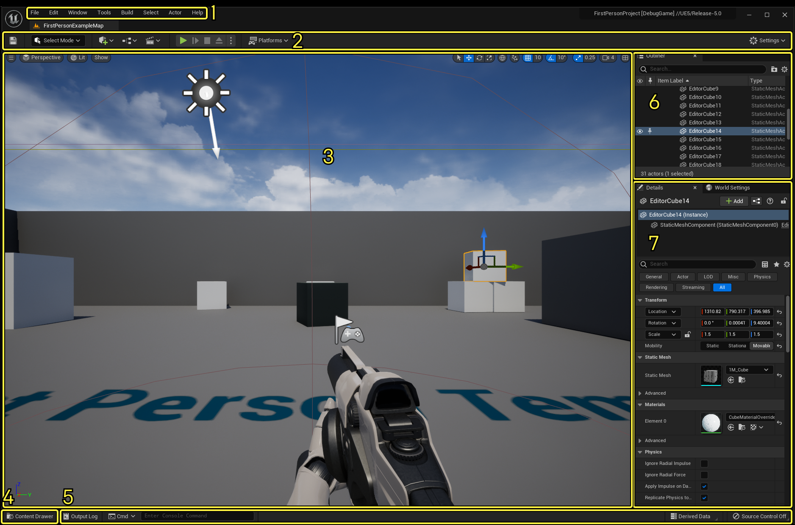
| 编号 | 名称 | 说明 |
|---|---|---|
| 1 | 主菜单（Menu Bar） | 使用这些菜单访问编辑器专用的命令和功能 |
| 2 | 主工具栏（Main Toolbar） | 包含虚幻引擎中最常用工具和编辑器的快捷方式，以及进入播放（play）模式（在虚幻编辑器中运行游戏）和用于将项目部署到其它平台的快捷方式 |
| 3 | 关卡视口（Level Viewport） | 显示关卡的内容，如摄像机、Actor、静态网格体等 |
| 4 | 内容侧滑菜单（Content Drawer） | 旧称内容浏览器，可在其中访问项目中的所有资产 |
| 5 | 底部菜单栏（Botton Toolbar） | 包含命令控制台、输出日志和派生数据功能的快捷方式，此外还显示源控制状态 |
| 6 | 大纲（Outline） | 显示关卡中所有内容的分层树状图 |
| 7 | 细节面板（Details） | 选择Actor时显示。显示该Actor的各种属性，如变换（Transform）（在关卡中的位置）、静态网格体、材质和物理设置。此面板显示不同设置，具体取决于在关卡视口中所选择的内容 |
虚幻引擎中的每一个编辑器都有一个位于该编辑器窗口右上角或屏幕顶部的菜单栏（Menu Bar）。主要功能包含：File、Edit、Tool、Window、Help等
（Main Toolbar）包含虚幻编辑器中部分最常使用的工具和命令的快捷方式，其中包含以下几个区域：
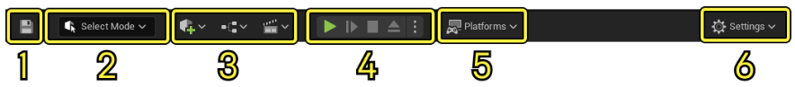
点击保存当前打开的关卡
只能保存当前关卡，用的最多的是内容浏览器的保存所有关卡
模式选择：包含的快捷方式用于再不同模式之间快速切换，以编辑关卡中的内容：
选择编辑
地形编辑
按shift是反操作，如shift+雕刻就是向下雕刻出坑来
植被编辑
先添加植被到这个小窗口中，然后可以根据具体需要调整参数（尤其是密度，默认是很高的）
注意选定的物体，可以选择多种不同的一起编辑，一起绘制（左上角的小对勾）
套索可以批量选择场景中的物体，但只能选择在小窗里选定的物体
对齐到法线：比如屋顶是斜的，则放上去的东西也是斜的
实例设置-剔除距离：在此距离之外该物体会不可见，即节省性能
注意一开始无论是植被还是石头都是没有碰撞的，要加上碰撞，需要：
在该植被下方的设置界面，设置碰撞预设，常用（block all）阻挡所有物体
点击植物图像（需要在网格体中点击），然后在碰撞一栏添加碰撞。但是直接添加碰撞是非常不精准的，这时可以在碰撞-自动凸包分解，调节凸包数量等，以此达到非常好的碰撞效果，但性能开销也会加大
网格体绘制
破裂编辑
笔刷编辑
只能对笔刷放置得到的物体进行编辑，对静态网格体是无效的
相比虚幻4，虚幻5“构建”选项移除了，即会默认自动进行光照烘焙
内容快捷方式：包含用于添加和打开编辑器中常见内容类型的快捷方式，主要有以下三种快捷方式（Shortcut）：
创建（create）：从常见资产列表中进行选择，以快速添加到关卡，此外还可以在此菜单中访问“放置Actor（Place Actor）”面板，以此将物体，如光源等放置到关卡中
蓝图（blueprint）：创建和访问蓝图
过场动画（cinematics）：创建关卡序列或主序列过场动画
此外，放置Actor面板就是虚幻4中的笔刷工具，点开之后就可以放置几何体，并在细节面板编辑笔刷，Additive增加（创建），Subtractive减去：减去也称挖空，前提是这两个都是BSP笔刷的对象。挖空型必须要位于另一个笔刷实体大纲目录的下方才能减去。默认新建一个物体都是在下方。可以在画刷设置的下方，选择排序，更改到最后绘制，这样就能减去
播放模式控制：包含用于在编辑器中运行游戏的快捷方式按钮（播放、跳过、停止和弹出）
模拟和运行：两者都是接近游戏的模式，会运行已经设置好的逻辑，区别在于运行就是常理解的运行，模拟是不获得玩家控制权的运行，即能够以上帝视角看到游戏的运行。在模拟的时候可以获得玩家控制器在，这样就变成运行了
平台菜单：包含一系列选项，可以用于配置、准备项目并将其部署到不同的平台，例如台式机或主机
设置：包含虚幻编辑器、关卡编辑器视口和游戏行为的各种设置
显示当前打开的关卡内容，在虚幻引擎中打开项目时，项目的默认关卡默认在关卡视口中打开，在这里可以查看和编辑活跃关卡的内容，无论是在游戏环境中、产品可视化应用中还是其他位置
关卡视口通常使用两种不同的方式显示关卡的内容：
视角（perspective）：3D视图，默认的视图，也称透视模式
直角（ortographic）：2D视图，沿着一个主轴俯视，最常用应该就是z轴的俯视吧。也称正交模式。以下为直角视图：
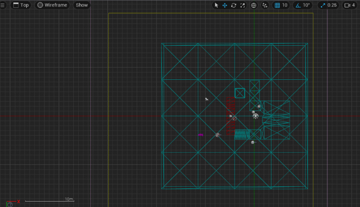
按G键进入游戏模式，会隐藏在真正游戏过程中看不到的东西，如灯光
书签可以记录某个摄像机的位置，如果想回去，使用书签会非常方便
选定某物体后，可切换局部（物体的坐标轴）和世界的坐标轴（总是保持水平的，无论从哪个方向上看都是一个样子），更加方便变换物体
网格对齐：其值的含义为一次移动多少单位或旋转多少角度
光照一项，可以选择不同的光照以及显示线框（所有顶点和线段）
是文件浏览器窗口，可以显示项目中包含的所有资产、蓝图和其他文件。可以使用内容浏览器来浏览内容、将资产拖动到关卡中、在项目之间迁移资产以及执行其他操作
默认情况下内容浏览器在未处于焦点状态下会自动最小化，想要常驻则可以点击右上角的“停靠在布局中”（Dock in Layout）
多使用“保存所有”，防止意外崩溃损失所有编辑数据
搜索旁边有个小过滤器，可以筛选资产，新建过滤器后，可以单击暂时禁止该过滤，也可以允许多个过滤
底部菜单栏包含命令控制台、输出日志和派生数据功能的快捷方式，此外还显示源控制状态
以前被称为“世界大纲视图”，显示关卡所有内容的分层视图。默认情况下此面板位于虚幻编辑器窗口的右上角
除了显示功能外，还可以在此进行以下操作：
通过点击关联的眼睛（eye）图标，快速隐藏或显示Actor
右键点击该Actor即可访问其上下文菜单（context menu），然年后可以在该菜单中执行其他特定于Actor的操作
创建、移动和删除文件夹
在关卡视口中选择一个Actor之后，细节面板将会显示影响所选Actor的设置和属性。默认情况下，该面板位于虚幻编辑器窗口右侧的大纲视图面板下
选定某物体后，细节面板可以手动进行物体移动、放缩、旋转的变换，更加精准
虚幻引擎提供了工具、编辑器和系统组合，用于创建游戏或应用程序
虚幻引擎中的部分工具和编辑器是内置的，而其他工具和编辑器则是可选的插件（plugins），这些插件可以根据项目需求来启用或禁用
工具：用来执行特定小任务的用具，如放置Actor、绘制地形等
编辑器：是完成某一类特定功能的工具集合，和“系统”类似
以下是将在虚幻引擎中使用的主要工具和编辑器，以及其主要使用场景
| 编辑器 | 使用场景 |
|---|---|
| 关卡编辑器 | Gameplay关卡 |
| 静态网格体编辑器 | 针对静态网格体，预览外观、碰撞和UV贴图等 |
| 材质编辑器 | 创建和编辑材质 |
| 蓝图编辑器 | 是使用蓝图和修改蓝图的地方，这些资产可以用来创建Gameplay元素（如控制Actor或对事件编写脚本），修改材质或执行其他虚幻引擎功能，省去编写C++代码的过程 |
| 物理资源编辑器 | 使用其创建物理资产，以配合骨架网格体使用，在实践中，可以使用此方法实现变形和碰撞等物理特性 |
| 行为树编辑器 | 通过可视化的基于节点脚本系统（类似于蓝图）为关卡中的Actor编写人工智能（这里是广义的人工智能）脚本的地方，可以为敌人、非游戏角色NPC、载具等创建任意数量的不同行为 |
| Niagara编辑器 | 利用由分离粒子发射器组成的全套模块化粒子效果系统，为每个效果创建特殊效果。可将发射器保存在内容浏览器中，以备后用 |
| UMG界面编辑器 | 视觉UI创作工具，可以用来创建UI元素，如在游戏内头顶显示、菜单或其他界面相关的图形 |
| 字体编辑器 | 使用字体编辑器添加、组织和预览字体资产。可以自定义字体参数，如字体资产布局和提示策略 |
| Sequencer编辑器 | 通过专用多轨道编辑器创建游戏过场动画 |
| 动画编辑器 | 编辑骨骼资产、骨骼网格体、动画蓝图，以及其他各种动画资产 |
| Control Rig编辑器 | 是动画工具套件，可以用于直接在引擎中操纵角色并实现其动画 |
| Sound Cue编辑器 | 虚幻引擎中音频播放行为在Sound Cue中得到定义，可使用Sound Cue编辑器对其进行编辑，在此编辑器中，你可以组合多个声音资产后混音，一次生成单混音输出 |
| 媒体播放器 | 使用媒体播放器来定义媒体文件或URL，以作为虚幻引擎内部播放的源媒体使用。可以定义源媒体播放方式设置，如自动播放、播放速度和循环等，但不能直接编辑媒体 |
| nDisplay 3D配置编辑器 | 用于虚拟制作和实时事件 |
| DMX库编辑器 | 用于实时事件。DMX含义为数字多路复用 |
左键单击：选择
选中某个物体后（这时不要按住鼠标了）：
按Q选择
按W移动
按E旋转
按R放缩，鼠标移动到中间时可以对3维方向进行等比例缩放
长按左键+alt：围绕这个物体旋转
左键双击世界大纲里面的物体：聚焦，可用于快速移动到某物体
左键长按：左右移动调整视角，前后移动调整距离
右键单击：打开选项
右键长按：360度旋转视角
中键长按：固定视角朝向不变，左右或上下移动
左右键同时按下等价于按中键
中键（滚轮）滚动：放缩
鼠标左键/右键按住+E：向上移动
鼠标左键/右键按住+Q：向下移动
ESC：退出游戏播放（运行）
F11：播放游戏时全屏或退出全屏
ctrl+点击，：在场景中选取多个目标
ctrl+alt+鼠标左键：框选多个目标
alt+拖动模型：快速复制该模型（鼠标必须在某个轴上拖动）
ctrl+拖动：锁定x轴，在x轴上移动模型
ctrl+s：保存资源
将游戏打包成在目标平台上可直接运行的文件
首先需要确定是否添加了玩家、玩家的出生点是否合理
设置默认加载的关卡和游戏模式
主工具栏-设置-项目设置-地图和模式，基本都需要手动改一下，这也是为什么不设置直接打包会出现问题，不要打包打错了！！！
然后在主工具栏-平台-windows64位
其中开发版（debug）还包含一些调试组件，可以继续调试，发行版（release）是即将上线的
注意打包的时候若未保存关卡可能会先提示保存关卡（将关卡另存为）
打包之前记得把退出游戏的逻辑做一下，否则就只能强制退出了
虚幻引擎中的初学者内容包自带一些素材，供学习使用，具体为如下分类
Architecture：建筑实体，例如墙
Audio：音频
Blueprint：蓝图
HDRI：一张hdr演示图
Maps：场景地图
Materials：材质
Particles：粒子等特效
Props：小道具，如椅子、板凳等
Shapes：基本的几何体，如球、立方体等
Texture：纹理
其中 Material 和 Texture 的区别：
纹理是材质的一部分，纹理是一个图片，用来描述表面的样子
材质描述物体表面的物理细节，包括纹理、光滑度、金属质感等
config：包含了项目设置，键盘输入之类的配置文件
Content：存放引擎或游戏的内容，包含地图、贴图、材质、模型、蓝图等
Intermediate：包含了在编译引擎时生成的临时文件，可直接删除
Saved：包含了自动保存内容，配置文件以及日志文件，可直接删除
.uproject：项目启动程序，打开我们的项目
虚幻引擎基本单位是厘米，即1个虚幻单位 == 现实世界1cm
一般在虚幻引擎中见到的小方块都是10cm，默认移动单位也是10cm
虚幻里自带的基本人物模型，高度为180cm
三者都是三维通用模型格式，都支持三个点以上的面，都可以用在几乎所有主流三维软件中
区别在于：
fbx中：可以包含动画、材质特性、贴图、骨骼动画、灯光、摄像机等信息
obj：不包含动画、材质特性、贴图路径、动力学、粒子等信息
abc格式：支持动画、粒子等
本质就是一个可以自由放置、修改多面体的一个工具，使用方便
位置：主工具栏-放置Actor-放置Actor面板-几何体
注意，放置actor面板里，只有几何体里的才是笔刷，其他的，包括”形状“，均不是笔刷，全是静态网格体
设置笔刷在细节面板，需要先选中笔刷或笔刷得到的物体
固体性：
固体：默认类型，可以阻挡玩家和射弹，在周围画刷中创建BSP分割
半固体：阻挡玩家和子弹，只能是添加型，不会创建BSP分割
非固体：只有视觉效果不会阻挡任何东西，只能是添加型，不会创建BSP分割
笔刷创建的多面体，可以在细节面板的“几何体”栏，快速选择面，以及”对齐“，使材质不再拉伸（如果已经拉伸了物体，又不想手动去细节面板调长度就能使用），但是要注意对齐方向
表面属性：可以将表面的材质等平移、旋转等操作
在选择模式-笔刷编辑模式，可以对笔刷得到的几何体进行编辑（对静态网格体无效）。该模式可以针对每一个顶点、每一个面都单独进行编辑。这些功能有的只针对面、或线或点，注意区分
画刷编辑中选择匹配的画刷可以选中这个物体的所有面
画刷得到的物体，若是形状、材质等都做好了，则可以选中它（可以在大纲里一起选择），然后在笔刷设置里转换成静态网格体，但是注意：若是多个物体一起创建静态网格体，则它们会完全变成一个整体。注意需要设置碰撞（可在做成静态网格体后设置）：具体设置为：选中该静态网格体，然后在细节面板找到静态网格体一栏，双击小图，即可打开静态网格体详情面板进行设置。所有静态网格体都可以这样设置
定向光源：平行光，比如太阳光
点光源：从一个点散发出的光线，类似灯泡
聚光源：从一个点发出圆锥形的光源，类似家里的吊灯
矩形光源：类似电脑屏幕这些矩形发出的光源，但性能开销较大，游戏中用的少
天空光照：天光，即把天空想象成一个半球，从半球上的每一点沿法线射来的光线
光源可移动和网格体的可移动性不相同，它指的是：
可移动：游戏中的完全实时动态光照，完全动态，能在游戏中进行移动和修改，全场景动态阴影，渲染速度最慢
固定：和静态一样无法移动，允许部分烘焙，可以有可移动对象的动态阴影，可在游戏中改变颜色和强度
静态：无法对可移动的模型产生阴影，性能开销最小，无法在游戏中修改参数，完全烘焙光照，只有这种模式需要每次修改了就要在此构建（烘焙）
指数级高度雾可以营造真实的氛围，包括远处山峰的若隐若现、光线的丁达尔效应、大雾天的路灯等
体积雾是指数级高度雾的一个小功能。指数级高度雾可能出现不真实的效果，比如完全看不到房子但却能看到玻璃材质的窗户，这个时候就可打开体积雾。注意添加体积雾非常吃性能
项目（Project）是虚幻引擎中最高级别的组织单位，一个项目可以包含多个关卡
世界（World）是游戏中的虚拟场景，是所有关卡的父级和容器，也是游戏中所有元素的根容器
场景（Sence）用来指代游戏世界的一个特定区域或游戏场景，一个场景可包含多个关卡
关卡（level）是游戏世界的一部分，可以包含场景、地图、角色等游戏元素。每个关卡有且仅有一个关卡蓝图。同时，一个关卡可以包含多个子关卡，但子关卡中没有关卡蓝图
地图（Map）是关卡中的一种资源，属于关卡的一部分
世界分区（World Partition）是虚幻引擎中用于处理大型开放世界的一种技术，将游戏世界分成许多小区块，每个区块成为世界分区。只有玩家所在的附近区域才会被加载和处理，可以提高游戏性能和加载速度，同时支持大规模游戏地图
是LOD技术的进一步发展。它允许开发者直接导入高分辨率的3D模型，并通过如下原理进行极低性能成本的即时渲染：
细节流式传输：Nanite 能根据视图距离和视角动态调整模型的细节级别，只渲染玩家可见的细节，并通过对传统LOD的优化和引入新的减面算法，使得LOD模型更新时平滑过渡
消除手动优化：开发者无需手动创建多级细节模型或将细节烘焙到法线贴图中
一种全动态全局光照的解决方案，能实时计算场景中的间接光照，可以认为是软件模拟的低精度光追，能生成逼真的光照效果，其优势在于：
动态适应性：场景中的直接光照发生变化时，Lumen 能实时更新间接光照
无需烘焙：开发者无需手动编写光照贴入UV或等待烘焙，可以直接在编辑器中调整光照，并实时看到最终结果
虚幻 5.5 中所引入的一项全新光照技术，能够支持场景中使用高达百万级别的动态光源，并生成逼真的区域阴影，而不会显著影响性能
蓝图和C++是虚幻引擎两种开发模式，其中C++是根本，蓝图是建立在C++之上的可视化界面
蓝图本质上是可视化编程，是虚幻引擎特色之一，它通过设置不同节点和按照特定逻辑连接它们，使得初学者不需要接触C++代码即可构建目标逻辑，方便了开发。但蓝图终究是“表面”，要想深入学习，必须接触代码。此外，当游戏逻辑过于复杂时，蓝图往往也会变得十分复杂
蓝图不是类，蓝图类才是通常意义上理解的类，通过蓝图类做出来的东西都是一个个实例对象
新建项目时选择蓝图开发
可在主工具栏-蓝图列表-打开关卡蓝图
关卡蓝图中左键移动选中的节点，右键移动蓝图平面
要在蓝图中为某个物体添加功能（比如碰撞盒子添加碰撞），需要先选中该物体，然后在关卡蓝图中右键才会出现有关操作
一般流程：选中物体-回到蓝图-右键创建该物体的引用-根据想要实现的功能创建新节点-设置好节点的参数-与其他物体的节点相关联-调整细节-完成
更改蓝图参数后每次都需要编译
虚幻引擎汉化越来越好，在关卡蓝图中搜索节点，大部分节点搜索时用中英文均可
节点和引脚是蓝图中的基本组件，不同节点之间通过不同引脚相连，形成数据流和游戏逻辑。此外，还有注释等其它元素。
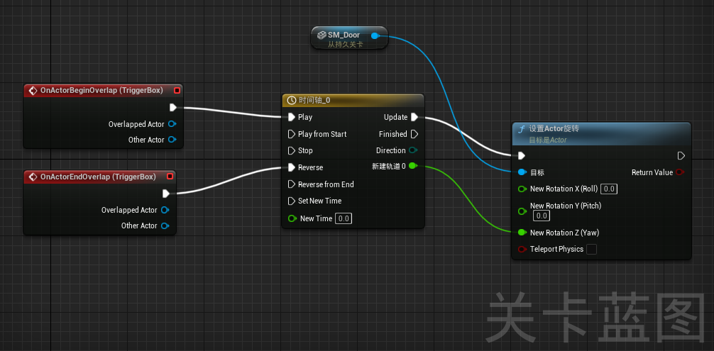
一个具体的节点可以同时被划分为多个类别，主要节点的种类：
功能节点：执行数据的操作和计算，一般是调用函数的节点
事件节点：响应游戏中的事件，如玩家输入、碰撞事件等
流程节点：控制游戏逻辑（蓝图）的流程，主要用于流程控制，并可进行功能节点、事件节点等其它节点的调用，其中的代表为事件开始运行节点，该节点往往作为关卡蓝图的开始节点：
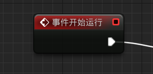
该种类节点以具有五边形白色曲线所连接的流程线为特点，没有这种接口的节点只能被调用
只有这种节点开头，整个流程才能走起来，不然后面的节点都无法正常运行
事件开始运行不仅是流程节点也是事件节点
值节点：存储和提供数据值，如变量、常量等。此类节点往往只有一个输出引脚
转换节点：将一个对象转化为另一个对象
除了上述节点，可自行编写函数并将其转化为节点，从而作为自定义节点进行调用
引脚的种类和所传递数据的数据类型有关，如下：
基本数据类型：bool、int、float、string等
复合数据类型：vector、rotator（旋转）、transform（变换）等
对象类型：Actor（游戏对象）、component（组件）、class
其他类型：color、texture、sound等
不同种类的引脚颜色是不同的，无法直接连接
蓝图中某些节点（如时间轴）可以双击点开，进一步设置
时间轴设置：先建立轨道，然后右键添加关键帧（第一个关键帧一般打在0时刻的位置），时间就是关键帧所在的时间点，值就是这个时间轴的事件的值，比如要门旋转5度，值就是5。甚至可以设置平滑切线，缓入缓出
按 F 聚焦，轨道上所有关键帧都会进入界面
一般需要把时间轴长度设置成关键帧的长度，不然如果需要反向播放这个操作的话，会有“前摇”或“后摇”
注意轴的位置，比如设置旋转85度，但触发后只动了一点点，这时候就可能是轴相对位置变了，设置成5度反而能达到预期效果
右键事件节点可以将三个轴拆分成单独的，然后使用时间轴节点新建多个轨道，这样就可以对每个轴单独进行设置，这个时候每个轴的值就不用设置了，因为时间轴里的设置会进行覆盖
单独对某个物体（实例）设置蓝图逻辑，当场景中存在很多这样的实例时，就必须把这个蓝图逻辑写到类中去
设置游戏开始、暂停：Set Game Paused
鼠标的显示和隐藏：ShowMouseCursor节点（必须获取角色控制器）
游戏退出：Quit Game节点
播放（直接搜播放）：包含音频、动画等播放
print：可以在屏幕左上角打印文本或字符串啥的，但仅供测试使用
append附加系列蓝图，直接搜append，用于各种元素的合并
reate widegt系列：创建控件，可具体选择创建UMG控件，注意：必须接添加到视口节点，且value和目标值要相连
此外，虚幻引擎也可以安装插件，以获取更多功能。比如在虚幻商城里安装varest插件后，可使用json等数据类型，并发送HTTP请求
make json：创建json数据
construct json request：创建json请求，目标为Varest系统
set request object：创建请求主体
set header：创建请求头，可多次创建（不需要分支）
apply url：发送请求，return即返回的数据
在虚幻商城里安装 readlocaltxt 这个插件后，可使用五个常用的和 txt 有关的节点，如readtxt、createtxt等，直接搜txt即可弹出节点，默认文件位置在存放引擎的位置UE_5.1\Engine\Binaries\Win64\里面
蓝图类即将类蓝图化，能在蓝图中轻松调用
重要的通用蓝图类：
Acotr：是一种可以在世界中放置或动态生成的对象
Pawn：是可以被控制的Actor，且可以接收来自Controller的输入，例如：象棋中的象棋子
角色：是Pawn的一种类型，增加了可以四处走动的功能（注意四处走动是比可移动更高级的）
玩家控制器：PlayController是Actor的一种子类，负责控制玩家所使用的Pawn
游戏模式基础：GameModeBase定义了正在进行的游戏、其规则、得分一级游戏类型的其他方面
Actor组件：ActorComponent是一种可复用组件，能被附加到任意Actor上
场景组件：SceneComponent是一种组件，能够进行场景变换并可被附加到其他场景组件下
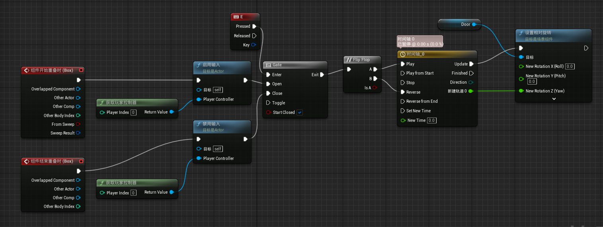
实现按键 E 开关门的蓝图
gate节点：此门非彼门，虽然叫“门”，但它实际上是一个判断节点，即判断正确就让你通过的这样的一扇门，控制流程节点
启用/禁用输入：获取来自某个控制器的输入，如键盘、鼠标输入。需要获取玩家控制器
进入时启用，离开时禁止，即离开后按E无效
Flip Flot：在A和B之间轮替进行，从A开始，即按第一下是开门，第二下就关门
UMG通信方式：UMG是UI，也是蓝图的一种
打开UMG，在图表视图中，我的蓝图--变量，新建一个变量，并把右边的小眼睛打开，然后在下面的细节面板中，把这个变量的“生成时公开”勾选，此时再创建UMG时，会需要传入参数
打开虚幻引擎，选择C++开发，在生成项目时将自动打开VS，且VS会自动生成一个项目并在后台搜索项目依赖
蓝图建立在 C++ 代码之上、可以和 C++ 很好的进行协作
理论平衡：
C++由游戏逻辑程序员使用，完成 UE 未封装或需要自定义的功能
蓝图由游戏设计人员使用，完成功能测试、项目迭代、设计其他游戏资源等
项目名称.uproject：可以用文本文档打开，是一个JSON数据结构的文件，里面包含项目的基本信息（如引擎版本）。它默认打开选项是UE，双击打开可打开项目
config文件夹：配置文件，都是.ini文件，也就是UE中的各种设置
content文件夹：引擎资源文件夹
saves文件夹：临时东西，包含备份文件、自动保存等
.vs文件夹：C++项目独有，用于编写代码时的智能提示等
.sln：C++项目独有，C++解决方案的文件
Binaries：C++项目独有，用于UE编辑器热加载C++类，删除后会重建
Source：C++项目独有，存放C++源文件
保管库：
在自己的项目使用其它项目时（如导入UE商城里下的各种场景等），都会在ValutCache文件夹里建立一个副本
C盘的AppData部分：
在local/UnrealEngine里，缓存着一些文件，主要是之前导入的各种特效、模型文件的材质的编译文件，删除后再次导入时需要重新编译
往下是子类，往上是父类
Object：存放数据，不能放置在场景（level）中
有UStaticMesh、UTexture等派生子类
Actor：可以防止在场景中，可以被看到
有ACameraActor、AHUD等派生子类
Pawn：可以被控制器（Controller）操控
有AWheeledVehicle等派生子类
Character：具有角色移动组件，具有角色的封装好的一系列功能（跑、游泳等动作）
有APaperCharacter等派生子类
是一个组织项目和相关资源的容器。它是一个用于开发和管理多个项目的工作区。在解决方案中，可以包含一个或多个项目（Project），以及可能的配置信息、共享资源、NuGet 包等
解决方案文件（.sln）是一个文本文件，其中包含了解决方案的配置信息以及各个项目之间的关联关系。每个项目则有其自己的项目文件（例如，C# 项目的.csproj文件），其中包含了该项目的构建配置、引用的文件、编译选项等
反射是一种编程语言特性，允许在运行时（Runtime）获取、检查和操作类、方法、属性等代码结构的信息
在虚幻引擎中，反射系统允许开发者在运行时通过代码来查询和操作类、对象和蓝图等元素。这为虚幻引擎提供了强大的动态性和灵活性，使得开发者能够在运行时动态地创建、修改和管理对象
一般垃圾回收由语言自己实现，但C++中并没有实现这一系统，导致可能会有内存泄漏等风险，而这一风险在游戏开发中又非常重要，所以虚幻帮我们实现了这一功能
UE 中所有的类都继承自UObject，而 UObject 类是用于自动释放资源的，不需要手动释放。即UE中的类，只要声明一下宏，就可以免去手动构建和释放
智能指针：用于原生的类（用户自定义）而非继承自UObject的类
UBT（Unreal Build Tool）： 是虚幻引擎的构建工具，用于将源代码和资源转换成可执行游戏或项目。UBT 负责编译 C++ 代码、处理资源文件（如纹理、模型等），生成所需的二进制文件和链接库等。开发者通常在修改 C++ 代码或添加新模块时需要运行 UBT 来重新构建项目
UHT （Unreal header Tool）：是虚幻引擎的头文件处理工具，用于处理蓝图类和其他一些特殊类的元信息。虚幻引擎使用了预处理的头文件（.generated.h）来处理反射系统和蓝图的元数据。UHT 负责扫描特定的源文件，提取元信息，并生成相应的.generated.h 头文件。这些生成的头文件包含了反射系统所需的元数据，以便在运行时可以正确地访问和操作蓝图和反射信息
虚幻引擎中的C++，是传统C++的一个超集，包含了C++的特性以及引擎所自定义的一些属性
在虚幻引擎中，直接使用 string、vector 等容器将在编译时报错，UE对针对游戏，对容器进行了优化，其容器包含FString、TArray等类型，必须使用UE支持的数据类型才能正常编译
运行时，是程序生命周期中的一部分，通常指代程序的运行时期或执行期间
与此对应的还有compile time（编译时）、Link time（链接时）等
新建C++工程，在C++类文件夹中，右键新建一个Object类型的C++类，之后双击它即可打开Visual Studio
若是 UE5.0 以上，在虚幻编辑器右下方的那排按钮中，启用live coding。编译按钮也移动至此，可直接点击进行编译。注意：启动live coding后，在 VS 中 build 将失败，此时直接点击虚幻编辑器中的编译按钮即可
在 VS 中进行指定的操作后，例如定义函数并将函数设置为可调用时，即可在UE中打开这个C++类的蓝图，并进行调用
实现自定义函数和蓝图节点，并输出文本
251
3// 该头文件的名字取决于我们的Object的名字6
7/**8 * 9 */10UCLASS(Blueprintable)11//UCLASS()宏是一个标记，使得UHT能够识别它，将它的信息识别后生成对应的类型信息。像UPROPERTY,UFUNCTION之类的宏，也起到类似的作用12class MY_PROJECTS_API UMyObject : public UObject13 // 可以注意到我们的项目名原本是MyObject，但这里加了一个U，这是UE的命名规范，代表继承自UObject这个类，若是建立的actor，则有AActor14{15 GENERATED_BODY()16 // GENERATED_BODY()是一个宏，用于帮助生成类的一些必要元数据，以支持蓝图系统和反射17public:18 UMyObject(); // 类的构造函数19
20 UPROPERTY(BlueprintReadWrite, Category = "My variables") // 这个宏代表以下的变量将加入反射系统，第一个参数代表变量可以在蓝图中进行读写21 float Myfloat; // Category参数代表在蓝图中建立节点时，这个变量或者函数归在哪一类，可以是自定定义的一个分类22
23 UFUNCTION(BlueprintCallable, Category = "My functions") // UFUNCTION宏代表将以下函数加入反射系统，第一个参数代表可在蓝图中被调用24 void Myfunction();25};需要注意：
宏一般不写分号，但本质是单独的一行代码。建议先写下面的函数再写宏
在写宏里面的参数时，它可能会提示带有CPF_前缀的参数，但它是不能使用的，使用它之后进行编译会报错，例如：Error: Unknown specifier 'CPF_BlueprintReadOnly'
161
3UMyObject::UMyObject()4{ // 类::类的方法，指定了某个类中的函数，即类外实现5 Myfloat = 0.0f;6}7
8void UMyObject::Myfunction()9{10 UE_LOG(LogTemp, Log, TEXT("Hello World!"));11 UE_LOG(LogTemp, Warning, TEXT("Hello World!"));12 UE_LOG(LogTemp, Error, TEXT("Hello World!"));13 // UE_LOG是UE中输出日志的一个函数，它有三个参数14 // 第一个参数是日志类型，LogTemp表示临时输出，第二个参数为输出级别，第三个为输出内容15 // 第三个参数为输出的内容，这里需要使用TEXT函数（也是UE的）传入字符串而不能直接传16}在蓝图中，仅有值连线的节点对应为读，而set变量的节点对应为写
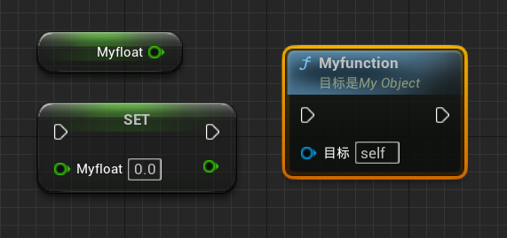
在该C++类的蓝图中放置这些节点，再在关卡蓝图将其实例化并调用：
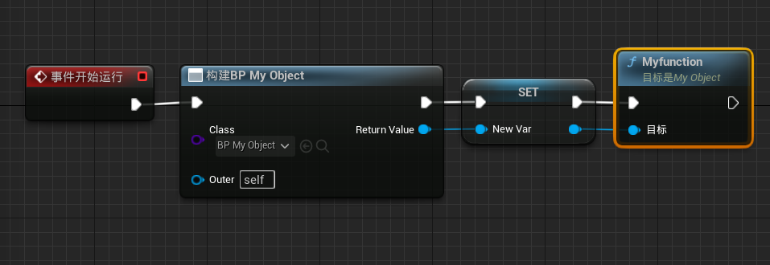
编译并运行，即可在输出日志里找到：
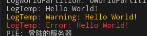
和创建 object 类是一样的步骤，只不过自动生成的代码会有些许不同
当通过创建的Actor C++类创建蓝图类时，这个由于蓝图是空的，UE会默认给蓝图类加上一个根组件，但C++类是没有的，所以直接拖拽它们到场景中是会有不同
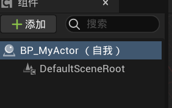
Component：组件是继承自Object的特殊类，用于辅助创造可在场景中展示的各种类，例如用于Actor、Character等。根组件是这整个蓝图类的局部做坐标的标识（Transform的基础）。当然，根组件是可以修改的，将新加的组件拖动到根组件处即可替换掉。测试阶段，可以添加一个最基本的组件，StaticMesh，也就是静态网格体组件
使用C++类而不是蓝图类：两者功能一致，只是创建方法不同
241
3
7UCLASS()8class MY_PROJECTS_API AMyActor : public AActor // AActor已经写了Blueprintable等，不需要再写9{10 GENERATED_BODY()11
12public: 13 // Sets default values for this actor's properties14 AMyActor();15
16 UPROPERTY(VisibleAnywhere, Category = "My Actor Components") // 标识任何地方均可见17 UStaticMeshComponent* StaticMesh; // 添加组件，继承于object所以类型以U开头，且是一个指针 18 // 这个指针的名字就是后面所添加的组件的名字19 // Called when the game starts or when spawned（生成）20 virtual void BeginPlay() override; // 重写的虚函数，在游戏开始或actor生成时调用21
22 // Called every frame // 每帧都调用的函数23 virtual void Tick(float DeltaTime) override;24};251
3// Sets default values4AMyActor::AMyActor()5{6 // Set this actor to call Tick() every frame. You can turn this off to improve performance if you don't need it.7 PrimaryActorTick.bCanEverTick = true;8 // 这个默认值代表actor是否启用每一帧的更新，如果为true，则Tick函数每一帧都将调用，关闭可提升性能9
10 StaticMesh = CreateDefaultSubobject<UStaticMeshComponent>(TEXT("My StaticMesh"));11 // 创建StaticMesh，使用UE中的创建子对象的函数，是一个模板函数，类型为UStaticMeshComponent，参数为标识符（是一个字符串），建议是组件的名字12}13
14// Called when the game starts or when spawned15void AMyActor::BeginPlay()16{17 Super::BeginPlay(); // 作用域为Super表示调用父类的方法18
19}20
21// Called every frame22void AMyActor::Tick(float DeltaTime)23{24 Super::Tick(DeltaTime);25}实现的效果：创建了一个C++类，包含一个静态网格体组件，可以直接拖动到场景中
在任何一个C++类中实现了函数后，进行编译，在关卡蓝图中也可以调用，只需要把情景相关取消勾选即可
例如UPROPERTY、UFUNCTION仅对下面的一个变量或函数有效，如何有两个或多个，则每个都要在前面加上对应的宏的声明，才能加入到反射系统，否则无效
反射重复编译问题：就算代码改动得很少，甚至没有改动，都重复编译整个项目。但只要使用UE高版本，使用热启动，就不会出现重复编译，消耗多余的时间
蓝图命名规范：以 BP_ 开头
需要记忆一些名称，例如UPROPERTY()这种宏，且由于项目文件比较庞大，智能提示可以不起效，甚至正确输入后，代码也不变颜色（例如宏的名称），需要等待一段时间
建议在每次打开项目后，进行编译一次，否则可能在C++中的更改不会生效
删除自定义C++类的步骤（注意是C++类而不是由它构建的蓝图类）：
找到所有依赖该类的其它资源，解除引用（例如关卡蓝图中的调用）
关掉UE Editor以及VS，打开工程文件夹，也就是VS编辑的文件所在的地方，删掉这个类为名的源文件和头文件
删除整个binaries文件夹
重新对项目进行编译
关于C++中继承自UE中某些类的命名规范：
派生自Actor的类带有A前缀，如Acontroller
派生自Object的类带有U前缀，如Ucomponent
Enums（枚举类）的前缀是E
Interface（接口类）的前缀通常是I
Template（泛型类、模板）的前缀是T，如TArray
派生自SWidget的类带有前缀S
其它类的前缀为F，如Fvector
建立蓝图类后，可以拖动到场景中生成多个实例，实例之间的差异性修改可以在details面板进行，实例之间的统一性修改可以直接修改蓝图类。一个静态网格体或骨架网格体同样可以转化为蓝图类
GENERATED_BODY()这一行在VS中可能报错（红色波浪线警告），但可以编译成功，实际上不影响后续的工作
关于模块(module)：
模块是位于Source文件夹下的多个文件或文件夹，是虚幻引擎项目中的一个逻辑单元，是一个代码库，可以包含 C++ 类、蓝图、资源以及其他相关文件，每个虚幻引擎项目由一个或多个模块组成。在虚幻引擎中，模块和 C++ 类通常一起使用，以实现项目的功能和逻辑。开发者可以在模块中组织 C++ 类，将相关功能放在同一个模块中，使代码更有组织性和可维护性
在新建一个C++类时，虚幻引擎将自动在Source文件夹下新建一个以项目为名称的文件夹，作为第一个模块，里面存放的是新建的C++类的代码
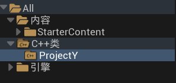
一个C++类就是一个模块，例如上图中ProjectY就是一个模块（该模块名称和项目名称相同，实际上是引擎自动创建的）
关于中文乱码：
在C++代码中包含了中文，在编译的过程中出现乱码且无法编译完成
产生该项问题的原因是UE中在进行字符串传递的时候默认把传进来的字符串视作UTF-8编码，然而在Windows中中文以GBK编码
在控制面板--时钟和区域，选择管理--更改系统区域设置，勾选提供全球语言支持，如下。并进行重启即可完美解决该问题
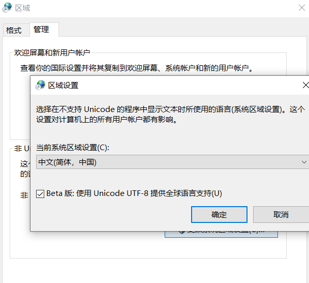
虚幻引擎导入第三方库时，相对路径很可能会报错，这是由于其源文件和编译得到的执行文件不一定在同一个目录下，导致搜索不到文件进而报错。一般是报内存地址错误：EXCEPTION_ACCESS_VIOLATION reading address，这一点需格外注意
首先将需要引入的 libs 文件夹和 include（头文件夹）复制到虚幻引擎安装位置（不是项目位置）的第三方库中，例如一个叫CobraX的库：D:\Games\UE_5.1\Engine\Source\ThirdParty\CobraX
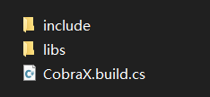
创建CobraX.build.cs中，该文件用于引擎寻找第三方库，在里面写上：
151using UnrealBuildTool;2public class nb : ModuleRules3{4 public nb(ReadOnlyTargetRules Target) : base(Target)5 {6 PCHUsage = PCHUsageMode.UseExplicitOrSharedPCHs;7
8 PublicDependencyModuleNames.AddRange(new string[] { "Core", "CoreUObject", "Engine", "InputCore"});9 PrivateDependencyModuleNames.AddRange(new string[] { });10 // 添加需要的具体的库文件，使用绝对路径11 PublicSystemLibraries.Add("D:\\Games\\UE_5.1\\Engine\\Source\\ThirdParty\\CobraX\\libs\\python310.lib");12 // 添加头文件的路径，同样使用绝对路径13 PublicIncludePaths.Add("D:\\Games\\UE_5.1\\Engine\\Source\\ThirdParty\\CobraX\\include");14 }15}
在需要使用第三方库的.build.cs文件中添加对第三方库路径，例如在一个叫nb的模块中，更改nb.build.cs：
131using UnrealBuildTool;2public class nb : ModuleRules3{4 public nb(ReadOnlyTargetRules Target) : base(Target)5 {6 PCHUsage = PCHUsageMode.UseExplicitOrSharedPCHs;7
8 PublicDependencyModuleNames.AddRange(new string[] { "Core", "CoreUObject", "Engine", "InputCore"});9 PrivateDependencyModuleNames.AddRange(new string[] { });10 PublicSystemLibraries.Add("D:\\Games\\UE_5.1\\Engine\\Source\\ThirdParty\\CobraX\\libs\\python310.lib");11 PublicIncludePaths.Add("D:\\Games\\UE_5.1\\Engine\\Source\\ThirdParty\\CobraX\\include");12 }13}其中要加上的为PublicSystemLibraries.Add和PublicIncludePaths.Add两行
需要注意：PublicDependencyModuleNames.AddRange是添加该模块所依赖的模块的名字的，所以在依赖第三方库时不需要把第三方库的名字写进去，网上很多教程都是有问题的
注意：ChatGPT的 API 发生了变化，原本的 API 调用可能无法成功
导入模型，包括场景和人物，以及人物的动作
实现虚幻引擎中调用API：载体是一个UMG控件蓝图，最终效果是调用该UI时，可以进行对话（在 UI 里写调用逻辑）
建立人物类，并添加到关卡中。它们有的关键属性：人物名字（催眠文件的读取要用），模型、动作等。并且在人物类中实现调用 UMG，使得进行指定事件之后，例如按下某个按键，可调用 UMG 进行对话
为游戏添加更多的细节，例如BGM、走路的声音，场景切换，利用蓝图、基本模型和几何体等设置一些小机关等
在设计器里设计UI的样式，在图表里设计UI的功能
设计器里右上角有最常用的一些UI元素，比如文本框、按钮等
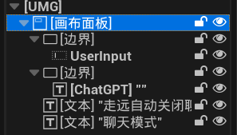
一般先需要建立一个画布面板，代表我们的屏幕。之后可直接拖动元素到画布上。左下角可管理现有的元素和父子关系，右边细节面板可设置元素的具体内容。勾选“是变量”，可在图表中进行调用和赋值等
图表里的蓝图的设计思路：先在设计器里创建可编辑文本，设为变量。然后当文本提交时（按下enter），调用自己写的调用 API 的函数，该函数返回chatgpt返回的文本到某个变量，并在界面中显示出来
调用API的函数的思路：
先读取特定角色数据，再和用户输入拼接起来作为content，然后make json，创建数组，再次make json，作为json object，创建请求体。再创建请求头，然后发送请求
获取返回的数据，逐步解析，得到文本，然后显示在屏幕上
要想实现多轮对话（不熟练UE的情况），可创建多个变量，分别存储多轮对话的信息，在每一轮对话中加一系列迭代的节点，一个个赋值给前面的变量，然后一起发送出去。变量的数量决定记忆轮数
详见：https://www.bilibili.com/video/BV1mv4y18778/ 建议5.1及以上的虚幻引擎版本
虚幻引擎高版本可以打开低版本的工程，但低版本的无法打开高版本的工程
项目名称不支持除了下划线以外的特殊符号，尽量不要使用中文
所有在引擎中使用到的资源，例如本地文件，都需要先导入虚幻引擎的内容浏览器，否则就算在蓝图中读取了这个文件，在项目打包时也不会包含本文件，造成出错
虚幻引擎中可以导入的文件都是虚幻引擎能直接利用的，例如材质、模型，导入后可以虚幻引擎将其作为虚幻引擎资产.uasset进行保存。但是，许多文件无法导入，例如.model，包括.py和.cpp。此时需要新建C++类，将文件放到cpp源文件所在的位置，在C++里进行调用，然后编译
导入的资源必须保存，否则重启编辑器将消失，内容浏览器的资源左下角若有个小星号则表示资源尚未保存。选中内容浏览器的资源然后点击引用查看器，可查看该actor所依赖的所有actor和蓝图
其他建模软件如blender、c4d、maya等，导出fbx模型文件时需要勾选“嵌入的媒体”才能顺利导出材质
导入模型的时候，若是有动画的，必须勾选骨骼网格体，当然静态的也可以勾选这个，他会转变成骨骼网格体。另外需要勾选合并网格体，因为在3D建模软件里模型是打散的，导入虚幻后整合成一个整体更加方便
如果直接R然后拖拽缩放，会使物体表面的材质也会发生缩放，这时可以选定该物体，然后在细节面板中更改笔刷设置，而不是transform板块
先选中材质，再放置物体，则物体每一个面都会使用该材质。直接拖拽材质到物体上，静态网格体所有面都会使用该材质，而笔刷对象只有当前面才会使用，这时可以先选中再放置
添加第三人称工具包，然后选择包内的蓝图的小人，拖动到游戏场景内，选中并在细节面板搜索”poss“，给予控制权即可操作。注意将小人拖动到场景中时只要点一次，点两次就是选中整个蓝图类
在世界大纲中搜索某种类型（如静态网格体staticmesh）就可以将其全部筛选出来，再ctrl+A就可快速全选所有静态网格体。之后在工具-合并Actor就可合并所有静态网格体
地形模式-管理-样条，按住ctrl后，在地形上单击多次即可创建条状地形选区，可以借此创建河流、道路等。选中样条上某一点后ctrl+a可全选该样条，然后在细节面板的地形样条网格体中选取模型加入到这个样条中。同样可以添加材质。另外，可以点击每一个”小山“进行单独的微调（拉高等操作）。在样条曲线工具一栏”使地貌变形为样条曲线”，即让地形自动匹配样条曲线的高度，防止“立交桥”
可导入16位灰度图作为地形
双击内容浏览器中的资产图像，可以进入该资产的调整面板，对碰撞等进行调整
关卡都放在内容浏览器里，如果一个项目有多个关卡，则正在浏览的这个关卡会用橙色表示，其余用蓝绿色表示
静态网格体只是说它没有骨骼，不能进行“内”运动，但可以把他改成可移动的，即作为一个整体可以移动，比如静态网格体的门，可以开关。静态网格体和静态、固定不是一个概念，注意区分。当设置可运动的物体时，比如门，首先就要检查其移动性和碰撞
蓝图里的坐标（以及旋转等）一定要注意，貌似里面的坐标是根据世界绝对坐标来的，而不是物体的相对坐标。蓝图编辑出现问题至少有80%以上都是由坐标轴引起的
若想要修改物体坐标轴原点：选中该物体，alt+鼠标中键拖动，随后右键-锚点-设置为枢轴偏移。注意在已编译的蓝图中使用的还是原来的坐标轴，且该方法并不一定对所有物体都生效。因此最好在Blender里就把坐标轴给弄好
注意世界坐标和相对坐标的区别：世界坐标是永远不会被改变的，恒定方向和原点，而相对坐标是可以改变的。相对坐标由蓝图类或C++类的根组件决定
若导入fbx模型后材质缺失，可自己手动添加材质，首先将材质图片（一般是png）拖动到虚幻的内容浏览器里，然后对于缺失材质的材质球，双击，删除原有的白色参数结点，按住T，点击任意位置即可创建新的材质结点。选中这个节点，在左侧的细节面板，材质表达式纹理基础，纹理中的右侧None，点击并搜索纹理。记得保存
导入带有动画的骨架网格体后，直接拖动动画到场景中即有模型
可以先把骨骼网格体导入到世界场景中，然后选中，在右下角细节面板中的动画板块，动画模式中，选择动画资产，选择我们的动画序列，同样可以导入具有动作的模型
要控制自己的人物移动，可使用以下步骤：
在内容浏览器中新建一个蓝图类--角色
双击，在左上角选中网格体，然后在右侧找到mesh（网格体），并导入我们自己的骨骼网格体
还是在左上角，需新建一个弹簧臂和camera，上面有添加的按钮
选中弹簧臂，然后在右边，摄像机选项中，勾选使用Pawn的控制旋转
可以自己写运动的蓝图，也可以在初学者包中的角色蓝图中，直接把蓝图给复制过来
右下角，世界场景设置，游戏模式中，游戏模式重载选择需要的游戏模式，并在选中的游戏模式中，默认的pawn类选择我们自己创建的蓝图、想要控制的角色的名字（此时只能动和跳跃，也就是平移，但没有动作）
两个资源下载网站
www.mixamo.com 注意：下载的都是fbx文件，下载时最好选择二进制fbx，以及下载skin。如果不下载skin则没有骨骼，不能直接导入虚幻引擎中
www.aplaybox.com/model/ 模型下载，包括人物和场景模型，也有一些动作
双击内容浏览器的物体可打开编辑界面，在这里添加碰撞等效果，不要在实例中去弄
物体中心轴不在想要的位置上：创建一个空物体作为这个物体的父级，把空物体移动到合适位置，这时运动空物体就可以移动子物体
Actor可以理解为所有模型的基类，可以放置具体的模型和逻辑，形成一个类
显卡占用高的四种解决方法：
前往设置--项目设置--帧率里，锁定帧率运行
设置--引擎可扩展性设置，按需把画质调低
项目设置--编辑器性能--把分辨率调低
游戏视口的左上角，关闭实时，按需打开
如果在内容浏览器中，想要删掉某个文件，总是出现内存中有引用，但在游戏场景中实在没有放置，这种情况可能是在项目设置中仍然存在引用，比如基础游戏设置中还有这个关卡的选项，即使可能没有打开，想把它删了。遇到这种情况可以直接去文件夹里把想要删的文件删了，但在此之前必须克隆项目。操作任何可能出问题的改变之前都必须备份，否则一旦出错整个项目都可能无法打开
不需要的文件，在打包之前需要删掉，因为会一起打包进去，即使没有任何使用
导入的模型和动作不兼容，常常表现在骨骼使用动画资产时无法搜索到动作，这是一个复杂的问题，目前已发现blender导入虚幻的模型、虚幻自己的小白人、网上下载的动作+模型都不能搜索到彼此，即都不能直接通用。甚至blender导入的模型之间都不能使用彼此的动作
要添加音频，若是场景音乐，可直接把音乐放在场景中，根据需要在细节面板中看是否勾选空间衰减。若是和具体物体有关的，则在蓝图中添加音频组件
常见问题：无访问正在尝试读取属性
虚幻引擎中的插件是额外的C++代码或者静态/动态库，可以给项目添加一些其它的功能。插件中的代码将会暴露在外，其它类可以直接调用